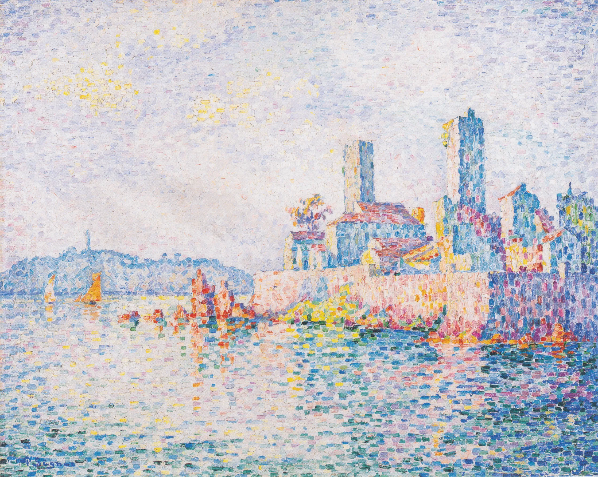
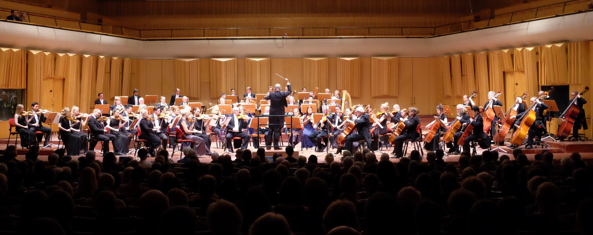

/a'man.da kan/
hon/henne | she/her
Just nu doktorerar jag i datorlingvistik vid Stockholms universitet, där jag letar efter nya sätt att använda intressanta mångspråkiga datamängder.
I'm pursuing my PhD in computational linguistics at Stockholm University, looking for new ways to make use of interesting multilingual datasets.

De senaste åren har jag undersökt tvärspråkliga mönster i bibeltexter och parlamentsprotokoll.
Most recently, I've been looking at cross-linguistic patterns in Bible texts and parliament proceedings.
Jag har också forskat på
- hur man skriver lärandemål i högskolan,
- varför Siri och Alexa är så dåliga på svengelska, och
- hur överdrivna tal som "femtioelva" ser ut i olika språk.
I've also researched
- how university teachers write learning outcomes,
- why Siri and Alexa are so bad at Swenglish, and
- what exaggerated numerals like "forty-leven" look like across languages.
Mer om min forskning (och kontaktadress) finns att läsa på min SU-hemsida.
You can read more about my research (and get in touch) on my uni homepage.

Jag spelar fagott i KTH:s akademiska kapell och i Videkvintetten.
I play the bassoon in the KTH Academic Orchestra and the woodwind quintet Videkvintetten.
Våra kommande konsertdatum finns i KTH:s konsertkalender.
Our upcoming concerts are listed in KTH's concert calendar.